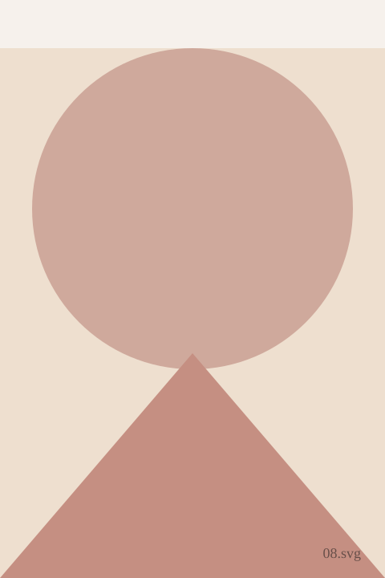
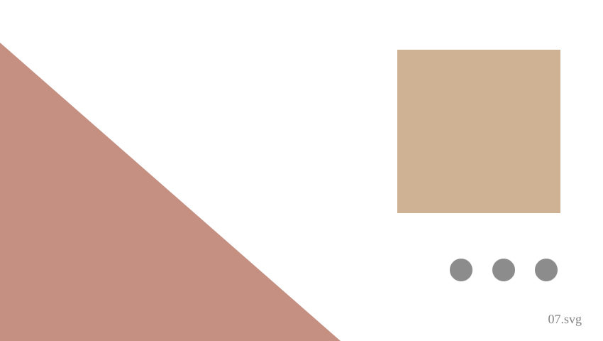

Fields Below the Studio
Silver gelatin print, 2022. Shot at first light from the studio's upper window.

Bell Tower
Medium format, 2021. The bell tower of the parish church, shot from the olive terrace below.

Studio Window
35mm film, 2020. The view from the studio's main working window, shot in every season for a year.

Old Wall
Medium format, 2022. A detail of the town wall, shot close and printed large.

Cypress Row
Silver gelatin print, 2023. A row of cypress trees along the road out of town, shot at dusk.

Well, Detail
35mm film, 2019. A close study of the courtyard well, shot from directly above.

Studio Floor
Medium format, 2021. The studio's stone floor, split by a bar of afternoon light.

Market Morning
35mm film, 2023. Stallholders setting up before dawn in the piazza, the last plate in this set.